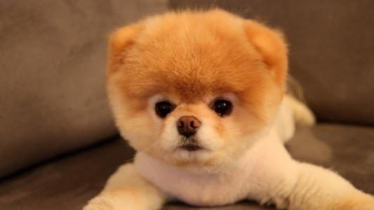

ABOUT
家有萌宠介绍
苏州有家宠物有限公司坐落于环境优美的苏州工业园区内，毗邻有家农庄度假村。整个场地约40亩，小河环绕，绿树成荫，大面积的草坪，按功能划分成四个区域：办公区、犬舍区、训练区、休闲度假区。

苏州有家宠物有限公司成立于2008年，主营业务：犬类买卖、宠物寄养、宠物训练及工作犬训练与出租，以及宠物医疗。10年来一直尽力打造品牌形象，为客户带来优质的产品和服务，作为苏州市分局的警犬基地承担安保任务。又于2009年开始为检验检疫局服务，活跃于国际机场、国际码头、国际列车站等出入境关口，成为了国门检疫第一犬，并在2013年全国检疫犬犬比赛中得到第一名的成绩。
有家公司10年来引进了多条国外的赛级犬，其中以日本的柴犬为主要犬种。从06年开始分别引进了：日本富士号、天王号、樱花、次郎等多条全日本犬赛中优秀犬，并精心繁殖培养新生一代，保证了国内纯血统柴犬的水平，建立了“莘巴柴”这一优质品牌。在销售过程中，我们提倡的是：售前、售中、售后的服务，三个要素的把关，让客户买得放心，让狗狗的健康得到良好的保障。
有家乐园为客户提供高质量宠物寄养及训练服务。我们有上门接送服务，为客户提供方便，让您在百忙之余不用为宠物的往返交通而过分担心。我们的宠物宾馆按照5星标准来建设的，每个犬舍10平方米。“一房一厅”分内外两室，室内控温控湿保证宠物犬生活的空气环境。在有家的宠物犬每隔几天保洁员就会帮它们梳理毛发，每10天就由专人帮它们洗澡做美容，每天上、下午饲养员都会陪着宠物在宽大的草坪上嬉戏、玩耍，是一个宠物寄养的理想场所。
有家乐园以人性化的管理，让您的爱犬有这样一个适宜游玩的居所，更为爱犬们提供了安息之地。在乐园小桥流水区域我们开辟了一块宠物墓地，您可以在这里建一块纪念碑，怀念那些给您带来过欢乐的爱犬们。有家乐园遵循这样的一句话：狗是人类最忠实的朋友，关爱它们犹如您的孩子！
| 2005 |
家有萌宠成立
坐落在苏州工业园区的苏州有家宠物有限公司,创建于2005年。
|
| 2007 |
与中国海关达成战略合作协议
9月25日上午，松江区与上海海关签署战略合作协议。上海海关关长，副关长，党组成员、巡视员与区委书记，区长俞太尉，区委常委、副区长，副区长等出席签约仪式。
|
| 2010 |
有家宠物大力发展
在中国，目前犬类产业的规范化道路只是处于起步阶段，犬的作用还没有得到广泛的开发，即使在宠物市场，目前也只是刚刚开始发展，但我国养犬业已成为了一个行业，在数量上已经具备一定的规模，犬业已经潜移默化的影响人们的生活和社会的发展。
但是中国宠物市场目前的发展水平还没有在真正意义上与世界接轨，我国的犬业发展至今还没有建立一个国际化和标准化的平台支撑。 随着人民生活水平的日益提高，在中国，宠物也逐渐成为人们越来越密切的伴侣。
无论是狗、猫、鸟，还是鱼或龟，这些往日看家护院、供人娱乐的小动物，开始成为家庭中的重要成员。在竞争日益激烈的社会环境中，宠物的可爱活泼为正处于紧 张的现代生活中的人类派遣孤独、增加情趣、缓解压力。经过专门训练的犬，不仅可以充当家庭伴侣型的宠物，还可以开发各种各样的工作潜力。
|
| 2014 |
有家宠物展
祝贺天王号和樱花在嘉善CKU比赛中，分别获得BIG和BOB冠军。
|
在过去的十年，有家乐园不断开发最新最优的犬品种，每年重金从国内外引进当年最优秀的赛级犬，逐步已成为一个国内优秀纯血统犬的繁育基地。有家乐园每年积极参加国内外各种大小赛事，并在比赛中获得无数个优秀犬称号，目前有家乐园以日本柴犬、德国狼犬及工作犬（拉布拉多）见长，在宠物行业里已有一定的知名度。
它们和我们一起分享生活，它们明确了我们的奋斗目标，也是我们的梦想。它们使我们有了每天在一起工作理由。观察它们我们从不厌倦，我们努力更好地了解它们，为它们的生活更加丰富多彩而工作，就象它们会让我们的生活更加绚烂多彩一样。 正是对宠物的热爱与承诺使得宠优与众不同。这种热爱与承诺既激励着我们，也给我们提出各种各样的挑战，而我们也从中获得了回报。正因如此，我们才能够在每一天都给数百万的宠物以及宠物主人的生活带来巨大的影响。